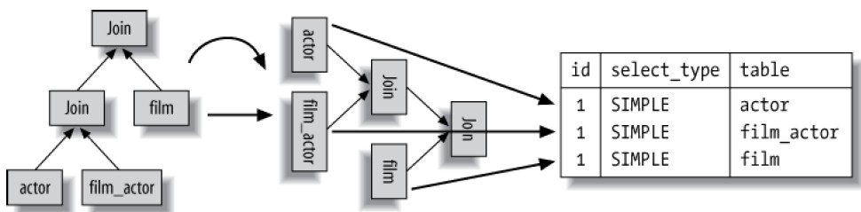

EXPLAIN 简介
EXPLAIN 语句提供有关 MySQL 如何执行语句的信息，MySQL 解释了它将如何处理该语句，包括有关如何连接表以及以何种顺序连接表的信息。EXPLAIN 可以与 SELECT，DELETE，INSERT，REPLACE 和 UPDATE 语句一起使用。
在 EXPLAIN 的帮助下，您可以看到应该在表中添加索引的位置，以便通过使用索引查找行来使语句更快地执行。您还可以使用 EXPLAIN 检查优化器是否以最佳顺序连接表。
EXPLAIN 也可用于获取有关表中各列的信息。 EXPLAIN tbl_name 与 DESCRIBE tbl_name 和 SHOW COLUMNS FROM tbl_name 相同。
以下示例中的表使用 MySQL Sakila 示例数据库。
EXPLAIN 的输出总是有相同的列。可变的是行数及内容。下表汇总这些列及它的简介，在接下来的小节中，我们将展示在 EXPLAIN 结果中每一列的意义。记住，输出中的行以 MySQL 实际执行的查询部分的顺序出现，而这个顺序不总是与其在原始 SQL 中的相一致。
| Column | Meaning |
|---|---|
id |
SELECT 编号 |
select_type |
SELECT 类型 |
table |
该行的表名 |
partitions |
匹配的分区 |
type |
关联类型 |
possible_keys |
可能用到的索引 |
key |
实际用到的索引 |
key_len |
实际用到索引的键长度 |
ref |
与索引进行比较的列名 |
rows |
估算要检查的行数 |
filtered |
按表条件过滤的行百分比 |
Extra |
附加信息 |
id 列
这一列总是包含一个编号，标识 SELECT 所属的行。如果在语句当中没有子査询或联合，那么只会有唯一的 SELECT，于是每一行在这个列中都将显示一个 1。否则，内层的 SELECT 语句一般会顺序编号，对应于其在原始语句中的位置。
MYSQL 将 SELECT 査询分为简单和复杂类型，复杂类型可分成三大类：简单子査询、所谓的派生表(在 FROM 子句中的子査询)，以及 UNION 查询。下面是一个简单的子査询：
id 的值代表 SELECT 在原 SQL 中的顺序，id 的顺序代表执行计划的顺序。
1 | EXPLAIN SELECT (SELECT 1 FROM sakila.actor LIMIT 1) FROM sakila.film; |
FROM 子句中的子査询和联合增加了 id 列的复杂性。下面是一个 FROM 子句中的基本子査询。
1 | EXPLAIN SELECT film_id FROM (SELECT film_id from sakila.film LIMIT 10) as der; |
如你所知，这个查询执行时有一个匿名临时表。 MySQL 内部通过别名（der）在外层查询中引用这个临时表，在更复杂的査询中可以看到 ref 列。
最后，下面是一个 UNION 查询：
1 | EXPLAIN SELECT 1 UNION SELECT 1; |
注意 UNION 结果输出中的额外行。 UNION 结果总是放在一个匿名临时表中，之后 MySQL 将结果读取到临时表外。临时表并不在原 SQL 中出现，因此它的 id 列是 NULL。与之前的例子相比（演示子査询的那个 FROM 子句中），从这个査询产生的临时表在结果中出现在最后一行，而不是第一行。
上面只是简单语句，但这三类语句的混合则会使输出变得非常复杂，后面我们会看到。
select_type 列
这一列显示了对应行是简单还是复杂 SELECT（如果是后者，那么是三种复杂类型中的哪一种)。 可能的值如下：
SIMPLE
SIMPLE 值意味着查询不包括子査询和 UNION。
PRIMARY
如果査询有任何复杂的子部分，则最外层部分标记为 PRIMARY，其他部分标记如下。
SUBQUERY
包含在 SELECT 列表中的子査询中的 SELECT (换句话说，不在 FROM 子句中)标记为 SUBOUERY。
DERIVED
DERIVED 值用来表示包含在 FROM 子句的子査询中的 SELECT，MySQL 会递归执行并将结果放到一个临时表中。服务器内部称其“派生表”，因为该临时表是从子査询中派生来的。
UNION
在 UNION 中的第二个和随后的 SELECT 被标记为 UNION。
UNION 和 UNION DISTINCT 同义，会删除重复行。UNION ALL 不会删除重复行。
UNION RESULT
用来从 UNION 的匿名临时表检索结果的 SELECT 被标记为 UNION RESULT。
其它
除了这些值，SUBQUERY 和 UNI0N 还可以被标记为 DEPENDENT 和 UNCACHEABLE。 DEPENDENT 意味着 SELECT 依赖于外层査询中发现的数据，UNCACHEABLE 意味着 SELECT 中的某些特性阻止结果被缓存于ー个 Item cache 中。（ Item cache 未被文档记载，它与査询缓存不是一回事，尽管它可以被一些相同类型的构件否定，例如 RAND() 函数。)
table 列
这一列显示了对应行正在访问哪个表。在通常情况下，它相当明了：它就是那个表，或是该表的别名(如果 SQL 中定义了别名)。
可以在这一列中从上往下观察 MySQL 的关联优化器为査询选择的关联顺序。例如，可以看到在下面的査询中 MySQL 选择的关联顺序不同于语句中所指定的顺序。
1 | EXPLAIN SELECT film.film_id |
MySQL 的査询执行计划总是左侧深度优先树。如果把这个计划放倒，就能按顺序读出叶子节点，它们直接对应于 EXPLAIN 中的行。之前的査询计划看起来如图所示。

在 SELECT 后加入指示
STRAIGHT_JOIN会要求 Mysql 按指定顺序进行连接，但是这也会丧失自动优化的好处。
派生表和联合
当 FROM 子句中有子査询或有 UNION 时，table 列会变得复杂得多。在这些场景下，确实没有一个“表”可以参考到，因为 MySQL 创建的匿名临时表仅在査询执行过程中存在。
当在 FROM 子句中有子査询时，table 列是<derivedN>的形式，其中 N 是子査询的 id。这总是“向前引用”一换言之，N 指向 EXPLAIN 输出中后面的一行。
当有 UNION 时，UNION RESULT 的 table 列包含一个参与 UNION 的 id 列表。这总是“向后引用”，因为 UNION RESULT 出现在 UION 中所有参与行之后。如果在列表中有超过 20 个 id， table 列可能被截断以防止太长，此时不可能看到所有的值。幸运的是，仍然可以推测包括哪些行，因为你可以看到第一行的 id。在这一行和 UNION RESULT 之间出现的一切都会以某种方式被包含。
下面是一个无意义的査询，我们这里把它用作某种复杂 SELECT 类型的紧凑示例。
1 | 1 EXPLAIN |
下面是 EXPLAIN 的结果：
1 | +------+----------------------+------------+... |
type 列
MySQL 用户手册上说这一列显示了“关联类型”，但我们认为更准确的说法是访问类型一一换言之就是 MySQL 决定如何查找表中的行。下面是最重要的访问方法，依次从最优到最差。
NULL
这种访问方式意味着 MySQL 能在优化阶段分解查询语句，在执行阶段甚至用不着再访问表或者索引。例如，从一个索引列里选取最小值可以通过单独查找索引来完成，不需要在执行时访问表。
const, system
当 MySQL 能对查询的某部分进行优化并将其转换成一个常量时，它就会使用这些访问类型。举例来说，如果你通过将某一行的主键放入 WHERE 子句里的方式来选取此行的主键，MySQL 就能把这个查询转换为一个常量。然后就可以高效地将表从联接执行中移除。
1 | EXPLAIN SELECT * FROM sakila.film WHERE film_id = 1; |
system是 const 的特例，对应于系统表的数据过滤。
eq_ref
使用这种索引査找，MySQL 知道最多只返回一条符合条件的记录。这种访问方法可以在 MySQL 使用主键或者唯一性索引査找时看到，它会将它们与某个参考值做比较。MySQL 对于这类访问类型的优化做得非常好，因为它知道无须估计匹配行的范围或在找到匹配行后再继续査找。
1 | EXPLAIN |
ref
这是一种索引访问(有时也叫做索引査找)，它返回所有匹配某个单个值的行。然而，它可能会找到多个符合条件的行，因此，它是査找和扫描的混合体。此类索引访问只有当使用非唯一性索引或者唯一性索引的非唯一性前缀时オ会发生。把它叫做 ref 是因为索引要跟某个参考值相比较。这个参考值或者是一个常数，或者是来自多表査询前一个表里的结果值。
可以用于使用 = 或 <=> 运算符进行比较的索引列。
ref_or_null
这种连接类型类似于 ref，但是 MySQL 会额外搜索包含 NULL 值的行。此联接类型优化最常用于解析子查询。在以下示例中，MySQL 可以使用 ref_or_null 连接来处理 ref_table：
1 | SELECT * FROM ref_table |
range
范围扫描就是一个有限制的索引扫描，它开始于索引里的某一点，返回匹配这个值域的行。这比全索引扫描好一些，因为它用不着遍历全部索引。显而易见的范围扫描是带有 BETWEEN 或在 WHERE 子句里带有比较运算法（<>, <=>, >, >=, <, <=）的查询。当 MySQL 使用索引去査找一系列值时，例如 IN() 和 OR 列表，也会显示为范围扫描。
然而，这两者其实是相当不同的访问类型，在性能上有重要的差异。
输出行中的 key 列表示使用了哪个索引。key_len 包含使用的最长的键部分。此类型的 ref 列为 NULL。
index
这个跟全表扫描一样，只是 MySQL 扫描表时按索引次序进行而不是行。它的主要优点是避免了排序；最大的缺点是要承担按索引次序读取整个表的开销。这通常意味着若是按随机次序访问行，开销将会非常大。
如果在 Extra 列中看到 “Using index”，说明 MySQL 正在使用覆盖索引，它只扫描索引的数据，而不是按索引次序的每一行。它比按索引次序全表扫描的开销要少很多。
ALL
这就是人们所称的全表扫描，通常意味着 MySQL 必须扫描整张表，从头到尾，去找到需要的行。(这里也有个例外，例如在査询里使用了 LIMIT，或者在 Extra 列中显示 “Using distinct/not exists”。)
possible_keys 列
这一列显示了査询可以使用哪些索引，这是基于査询访问的列和使用的比较操作符来判断的。这个列表是在优化过程的早期创建的，因此有些罗列出来的索引可能对于后续优化过程是没用的。
key 列
这一列显示了 MySQL 决定采用哪个索引来优化对该表的访问。如果该索引没有出现在 possible_keys 列中，那么 MySQL 选用它是出于另外的原因一例如，它可能选择了个覆盖索引，哪怕没有 WHERE 子句。
换句话说，possible keys 揭示了哪一个索引能有助于高效地行査找，而 key 显示的是优化采用哪一个索引可以最小化査询成本。下面就是一个例子。
1 | EXPLAIN SELECT actor_id, film_id FROM sakila.film_actor \G |
key_len 列
该列显示了 MySQL 在索引里使用的字节数。如果 MySQL 正在使用的只是索引里的某些列，那么就可以用这个值来算出具体是哪些列。要记住，MySQL5.5 及之前版本只能使用索引的最左前缀。举例来说，sakila.film_actor 的主键是两个 SMALLINT 列，并且每个 SMALLINT 列是两字节，那么索引中的每项是 4 字节。以下就是一个査询的示例：
1 | EXPLAIN SELECT actor_id, film_id FROM sakila.film_actor WHERE actor_id=4; |
基于结果中的 key_len 列，可以推断出査询使用唯一的首列一 actor_id 列，来执行索引査找。当我们计算列的使用情况时，务必把字符列中的字符集也考虑进去。
1 | CREATE TABLE t |
这个査询中平均长度为 13 字节，即为 a 列和 b 列的总长度。a 列是 3 个字符，utf8 下每一个最多为 3 字节，而 b 列是一个 4 字节整型。则 key_len = 3*3 + 4；
key_len 列显示了在索引字段中可能的最大长度，而不是表中数据使用的实际字节数。
在前面例子中 MySQL 总是显示 13 字节，即使 a 列恰巧只包含一个字符长度。换言之，key_len 通过査找表的定义而被计算出，而不是表中的数据。
| 类型 | 长度 | 描述 |
|---|---|---|
| 字符串 | char(n)：n 字节长度；varchar(n)：2 字节存储字符串长度 | 如果是 utf-8，则 n 字节变为 3n |
| 数值类型 | tinyint：1 字节；smallint：2 字节；int：4 字节；bigint：8 字节 | |
| 时间类型 | date：3 字节；timestamp：4 字节；datetime：8 字节 |
ref 列
ref 列显示将哪些列或常量与 key 列中的列出的索引进行比较，以从表中选择行。下面是一个展示关联条件和别名组合的例子。注意，ref 列反映了在査询文本中 film 表是如何以 f 为别名的。
1 | EXPLAIN |
rows 列
rows 列表示 MySQL 认为执行查询必须检查的行数。这个数字是内嵌循环关联计划里的循环数目。也就是说它不是 MySQL 认为它最终要从表里读取出来的行数，而是 MySQL 为了找到符合査询的每一点上标谁的那些行而必须读取的行的平均数。（这个标准包括 SQL 里给定的条件，以及来自联接次序上前一个表的当前列。）
根据表的统计信息和索引的选用情况，这个估算可能很不精确。在有些版本里,它也反映不出 LIMIT 子句。举例来说，下面这个査询不会真的检査1000 行。
1 | explain select * from sakila.film limit 1\G |
通过把所有 rows 列的值相乘，可以粗略地估算出整个査询会检査的行数。例如，以下这个査询大约会检査 5400 行。
1 | EXPLAIN |
要记住这个数字是 MySQL 认为它要检査的行数，而不是结果集里的行数。同时也要认识到有很多优化手段，例如关联缓冲区和缓存，无法影响到行数的显示。MySQL 可能不必真的读所有它估计到的行，它也不知道任何关于操作系统或硬件缓存的信息。
partitions、filtered 列
partitions 表示所匹配的分区；
filtered 显示的是针对表里符合某个条件（WHERE 子句或联接条件）的记录数的百分比所做的一个悲观估算。最大值为100，这表示未对行进行过滤。值从 100 减小表示过滤量增加。rows 显示要检查的行的估计数，rows × filtered 显示与接下来的表连接的行数。例如，如果 rows 为1000，filtered 为 50.00（50％），则与下表连接的行数为1000×50％ = 500。
Extra 列
这一列包含的是不适合在其他列显示的额外信息。 MySQL 用户手册里记录了大多数可以在这里出现的值。
常见的最重要的值如下：
”Using index“
此值表示 MySQL 将使用覆盖索引，以避免访问表。不要把覆盖索引和 index 访问类型弄混了。
表示查询的列被索引覆盖，这个是查询性能比较高的体现，即所要查询的信息搜在索引里面可以得到，不用回表。
“Using where”
这意味着 MySQL 服务器将在存储擎检索行后再进行过滤。许多 WHERE 条件里涉及索引中的列，当（并且如果）它读取索引时，就能被存储引擎检验，因此不是所有带 WHERE 子句的査询都会显示 “Using where”。有时 “Using where” 的出现就是个暗示：査询可受益于不同的索引。
WHERE 子句用于限制要与下一个表匹配或发送给客户端的行。除非您特别打算从表中获取或检查所有行，否则，如果 Extra 值不是 Using where 并且表联接类型为 ALL 或 index，则查询中可能出现了问题。
“Using temporary”
为了完成查询，MySQL 需要创建一个临时表来保存结果。如果查询包含以不同方式列出列的 GROUP_BY 和 ORDER BY 子句，通常会发生这种情况。
“Using filesort”
这意味着 MySQL 会对结果使用一个外部索引排序，而不是按索引次序从表里读取行。 如果读取到的行数据于 sort_buffer_size 系统变量相比小，则在内存排序，相反内存不够或超过该变量，那么 MySQL 会先将数据分块，对每个独立的块使用 “快速排序” 进行排序，并将各个块的排序结果存放在磁盘上，然后将各个排好序的块进行合并，最后返回排序结果。 EXPLAIN 不会告诉你 MySQL 将使用哪一种文件排序，也不会告诉你排序会在内存里还是磁盘上完成。
“Using join buffer”
Using join buffer 表示使用连接缓冲区的行提取匹配行。
内部细分可能包含：块级联循环算法（Block Nested-Loop），批量键访问算法（Batched Key Access），hash join。
“Impossible where”
WHERE 子句始终为 false，无法选择任何行。
“Select tables optimized away”
表示 SELECT 语句没有遍历表或者索引就返回数据了。
比如在优化阶段可以确定要读取的行（通过读取索引行），则在查询阶段无需读取任何表。如下面的示例：
1 | EXPLAIN SELECT MIN(film_id) FROM sakila.film; |